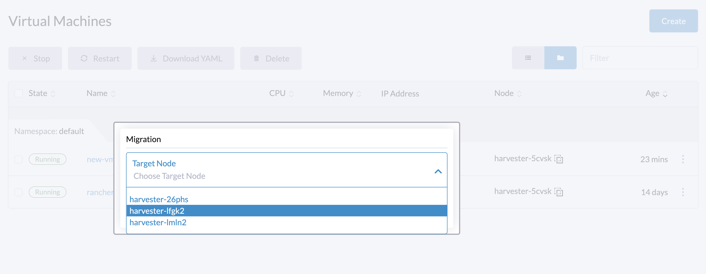

|
Este documento foi traduzido usando tecnologia de tradução automática de máquina. Sempre trabalhamos para apresentar traduções precisas, mas não oferecemos nenhuma garantia em relação à integridade, precisão ou confiabilidade do conteúdo traduzido. Em caso de qualquer discrepância, a versão original em inglês prevalecerá e constituirá o texto official. |
Migração ao vivo
A migração ao vivo significa mover uma máquina virtual para um host diferente sem tempo de inatividade. Um conjunto de processos e tarefas abrangentes é realizado nos bastidores para cumprir a migração ao vivo.
Pré-requisitos
A migração ao vivo pode ocorrer quando os seguintes requisitos são atendidos:
-
Além do nó atual, o cluster possui pelo menos um nó agendável que corresponde a todas as regras de agendamento da máquina virtual.
-
O nó de destino da migração tem recursos disponíveis suficientes para hospedar a máquina virtual.
-
A CPU, memória, volumes, dispositivos e outros recursos solicitados pela máquina virtual podem ser copiados ou reconstruídos no nó de destino da migração enquanto a máquina virtual de origem ainda está em execução.
Máquinas Virtuais Não Migráveis
Uma máquina virtual é considerada não migrável se tiver uma ou mais das seguintes características:
-
Volume com as seguintes propriedades:
-
Tipo:
CD-ROMouContainer Disk -
Modo de acesso:
ReadWriteOnce -
Contagem de réplicas do StorageClass:
1(Isso não é detectado em todos os casos.)
-
-
Dispositivos de host em passthrough, como
PCIevGPU -
Seletor de nó que vincula a máquina virtual a um nó específico
-
Regras de agendamento que correspondem a apenas um nó.
Os seguintes são exemplos de condições de regra que são verificadas em runtime:
-
A máquina virtual está conectada a uma rede de cluster que cobre apenas um nó.
-
O pinning de CPU está habilitado na máquina virtual, e o Gerenciador de CPU está habilitado apenas em um nó.
-
A máquina virtual possui regras estritas de anti-afinidade que impedem que ela seja co-localizada com certas outras máquinas virtuais.
Para mais informações, veja Regras de Afinidade Aplicadas Automaticamente.
|
Para migrar a máquina virtual ao vivo, você deve primeiro remover dispositivos não migráveis e adicionar nós agendáveis. |
Máquinas Virtuais Migráveis ao Vivo
Máquinas virtuais que não possuem as propriedades de máquinas virtuais não migráveis podem ser migradas ao vivo.
Como a Migração Funciona
VirtualMachineInstanceMigration Objeto
Quando uma ação de migração de máquina virtual é acionada, um VirtualMachineInstanceMigration objeto é criado para rastrear o estado e o progresso da operação. O controlador SUSE Virtualization correlaciona o objeto VirtualMachineInstanceMigration com o objeto VirtualMachineInstance garantindo que a identidade do objeto de instância seja refletida no objeto de migração.
No exemplo a seguir, a máquina virtual chamada demo tem um objeto de migração associado. O UID deste objeto é adicionado à propriedade .status.migrationState.migrationUID do objeto de instância durante a migração.
$ kubectl get vmi demo -ojsonpath={.status.migrationState.migrationUID}
1d6d7273-275d-48e0-bb76-62e240b42aaf
O nome do objeto de instância é adicionado à propriedade .spec.vmiName do objeto de migração.
$ kubectl get vmim demo-6crrk -ojsonpath={.spec.vmiName}
demo
O formato do nome do objeto VirtualMachineInstanceMigration varia dependendo se a migração é acionada manualmente ou automaticamente.
Quando uma migração é acionada a partir do item de menu Migrar, o nome do objeto VirtualMachineInstanceMigration é prefixado com o nome da máquina virtual e uma string aleatória (por exemplo, vm1-a3d1f).
Quando uma migração é acionada automaticamente, o nome do objeto VirtualMachineInstanceMigration é prefixado com kubevirt-evacuation- e uma string aleatória (por exemplo, kubevirt-evacuation-9c485).
|
A interface do usuário SUSE Virtualization não especifica a origem da migração. Você deve verificar o nome do objeto |
Correspondência de Modelo de CPU
Cada nó possui vários modelos de CPU que são rotulados com diferentes chaves.
-
Modelo de CPU primário:
host-model-cpu.node.kubevirt.io/{cpu-model} -
Modelos de CPU suportados:
cpu-model.node.kubevirt.io/{cpu-model} -
Modelos de CPU suportados para migração:
cpu-model-migration.node.kubevirt.io/{cpu-model}
Durante a migração ao vivo, o controlador verifica o valor de spec.domain.cpu.model no CR do VirtualMachineInstance (VMI), que é derivado de spec.template.spec.domain.cpu.model no CR da VirtualMachine (VM). Se o valor de spec.template.spec.domain.cpu.model não estiver definido, o controlador usa o valor padrão host-model.
Quando host-model é usado, o processo busca o valor do modelo de CPU primário e preenche spec.NodeSelectors do pod recém-criado com o rótulo cpu-model-migration.node.kubevirt.io/{cpu-model}.
Alternativamente, você pode personalizar o modelo de CPU em spec.domain.cpu.model. Por exemplo, se o modelo de CPU for XYZ, o processo preenche spec.NodeSelectors do pod recém-criado com o rótulo cpu-model.node.kubevirt.io/XYZ.
No entanto, host-model permite apenas a migração da VM para um nó com o mesmo modelo de CPU. Para obter mais informações, consulte Limitações.
Iniciando uma migração
-
Vá para a página Máquinas Virtuais.
-
Encontre a máquina virtual que você deseja migrar e selecione ⋮ > Migrar.
-
Escolha o nó para o qual você deseja migrar a máquina virtual. Clique em Aplicar.

|
A opção de menu Migrar não está disponível nas seguintes situações:
|

Abortando uma migração
-
Vá para a página Máquinas Virtuais.
-
Encontre a máquina virtual no status de migração que você deseja abortar. Selecione ⋮ → Abortar migração.
|
Migração em lote acionada automaticamente
Fazer upgrade e manutenção de nó se beneficiam da migração ao vivo. O processo subjacente, que é chamado de migração em lote, é ligeiramente diferente do descrito em Iniciando uma migração. Este processo envolve os seguintes passos:
-
O controlador observa uma marca dedicada no objeto do nó.
-
O controlador cria um objeto
VirtualMachineInstanceMigrationpara cada máquina virtual migrável ao vivo no nó atual. -
As migrações são enfileiradas, agendadas internamente e processadas em lotes. A interface SUSE Virtualization mostra os status Migração pendente e Migrando para indicar o progresso.
-
O controlador monitora o processamento e aguarda até que todos sejam concluídos ou tenham expirado.
Timeouts de migração
Timeout de conclusão
O processo de migração ao vivo copia páginas de memória da máquina virtual e blocos de disco para o destino. Em certos casos, a máquina virtual pode gravar em diferentes páginas de memória ou blocos de disco a uma taxa maior do que esses podem ser copiados. Como resultado, o processo de migração é impedido de ser concluído em um tempo razoável.
A migração ao vivo é abortada se exceder o tempo limite de conclusão de 800s por GiB de dados. Por exemplo, uma máquina virtual com 8 GiB de memória atinge o tempo limite após 6400 segundos.
Limitações
Modelos de CPU
host-model permite apenas a migração da máquina virtual para um nó com o mesmo modelo de CPU. No entanto, especificar um modelo de CPU nem sempre é necessário. Quando nenhum modelo de CPU é especificado, você deve desligar a máquina virtual, atribuir um modelo de CPU que seja suportado por todos os nós e, em seguida, reiniciar a máquina virtual.
Exemplo:
-
Um nó:
host-model-cpu.node.kubevirt.io/XYZcpu-model-migration.node.kubevirt.io/XYZcpu-model.node.kubevirt.io/123 -
Nó B:
host-model-cpu.node.kubevirt.io/ABCcpu-model-migration.node.kubevirt.io/ABCcpu-model.node.kubevirt.io/123
Migrar uma máquina virtual com host-model não é possível porque os valores de host-model-cpu.node.kubevirt.io não são idênticos. No entanto, ambos os nós suportam o modelo de CPU 123, então você pode migrar qualquer máquina virtual com o modelo de CPU 123 usando um dos seguintes métodos:
-
Nível de cluster: Execute
kubectl edit kubevirts.kubevirt.io -n harvester-systeme adicionespec.configuration.cpuModel: "123". Essa alteração também afeta máquinas virtuais recém-criadas. -
Máquinas virtuais individuais: Modifique a configuração da máquina virtual para incluir
spec.template.spec.domain.cpu.model: "123".
Ambos os métodos exigem que você reinicie as VMs. Se você tiver certeza de que todos os nós no cluster suportam um modelo de CPU específico, pode definir isso no nível do cluster antes de criar qualquer VM. Ao fazer isso, você elimina a necessidade de reiniciar as VMs (para atribuir o modelo de CPU) durante a migração ao vivo.
Interrupções de rede
A migração ao vivo é altamente sensível a interrupções de rede. Qualquer interrupção na conexão de rede entre os nós de origem e destino durante a migração pode ter uma variedade de resultados.
mgmt interrupções de rede
A migração ao vivo via mgmt (a rede de cluster incorporada) depende da disponibilidade das interfaces de gerenciamento nos nós de origem e destino. mgmt interrupções de rede são consideradas críticas porque não apenas interrompem o processo de migração, mas também afetam o gerenciamento geral dos nós.
Interrupções de rede na migração de VM
Uma rede de migração de VM isola o tráfego de migração de outras atividades de rede. Embora essa configuração melhore o desempenho e a confiabilidade da migração, especialmente em ambientes com alto tráfego de rede, ela também torna o processo de migração dependente da disponibilidade daquela rede específica.
Uma interrupção na rede de migração de VM pode afetar o processo de migração das seguintes maneiras:
-
Interrupção breve: O processo de migração para abruptamente. Uma vez que a conectividade é restaurada, o processo retoma e pode ser concluído com sucesso, embora com um atraso.
-
Interrupção prolongada: A operação de migração expira e falha. A máquina virtual de origem continua a funcionar normalmente no nó de origem.
O processo de migração opera em modo peer-to-peer, o que significa que o daemon libvirt (libvirtd) no nó de origem controla a migração chamando diretamente o daemon de destino. Um mecanismo de keepalive incorporado garante que a conexão do cliente permaneça ativa durante o processo de migração. Se a conexão permanecer inativa por um período específico, ela é fechada e o processo de migração é abortado.
Por padrão, o intervalo de keepalive é definido para 5 segundos, e a contagem de tentativas é definida para 5. Dado esses valores padrão, o processo de migração é abortado se a conexão estiver inativa por 30 segundos. No entanto, a migração pode falhar mais cedo ou mais tarde, dependendo das condições reais do cluster.